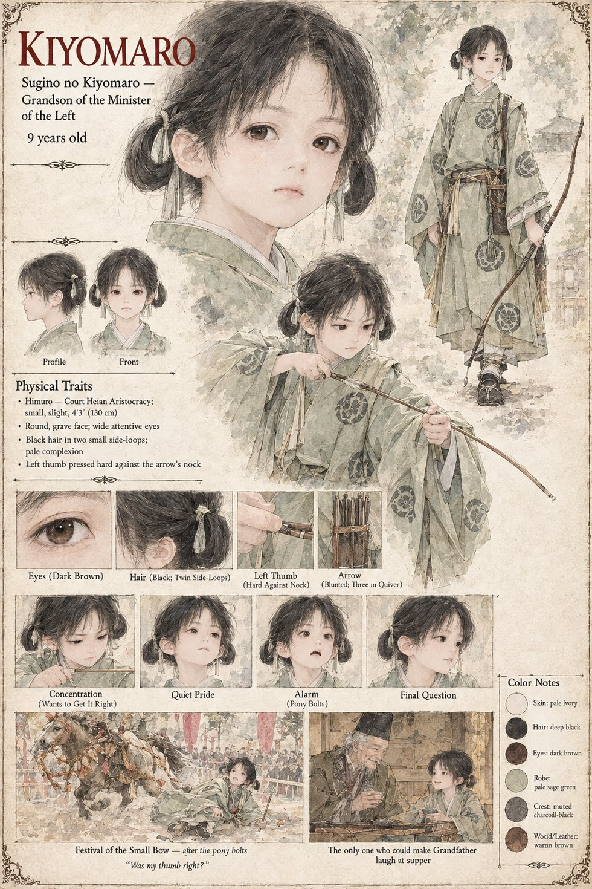

Kiyomaro
Sugino no Kiyomaro · grandson of the Minister of the Left · 9 years old
Nine years old, grandson of Sugino no Arikuni and the only creature in the realm of Himuro who has ever persuaded that Minister to laugh aloud at his own supper. On the twelfth of Eldren, at the Festival of the Small Bow, he is allowed once in his life a short course on a pony and three blunted arrows at a target of rice-straw, and spends the morning behind the ranked families' pavilion learning from Tomobe no Higaide to settle the nocking-point against his thumb. Higaide discovers, with the helpless astonishment of a man whose own daughter is six and has not yet been persuaded to listen to anyone, that Kiyomaro listens. He rides Kurige at a walk and then a canter, upright and grave, a hundred and twenty paces from his teacher; then Azuki, arriving a half-breath late, catches the pony's hock, and he goes over the shoulder with an arrow still in his left hand, having been taught by a good teacher how to hold a bow and by nobody how to fall.
The physician pronounces it a broken neck, which leaves the boy forty minutes in which to be a person rather than a wound. They carry him into the pavilion. He finds Higaide's sleeve with one hand and studies his face with the clear, interested attention of a child who has been told something is important and wants to get it right, and asks whether his thumb was right at the nock. “Perfect,” says Higaide. He dies a little before the hour of the Sheep. The Law that is built round his death, the Fifth Article and the Stone, is the thing that follows him; his grandfather, who weeps at neither pavilion nor pyre, begins the list of the dead he later copies out as sutras with the boy. The manuscript gives his name, his age, his listening and his question. The sheet's round face, twin side-loops and pale sage robe are its own.
“Was my thumb right?”
Appears In

Related Subjects


Related Records

A half-breath late to the starting line, Azuki has the pony's hock, Kurige bolts across the meadow with Kiyomaro in the saddle, and Tomobe no Higaide, forty paces off, begins to run.

In the ranked families' pavilion Kiyomaro finds Tomobe no Higaide's sleeve and asks whether his thumb was right at the nock; “Perfect,” says Higaide, and the Minister of the Left kneels nearby and says nothing at all.